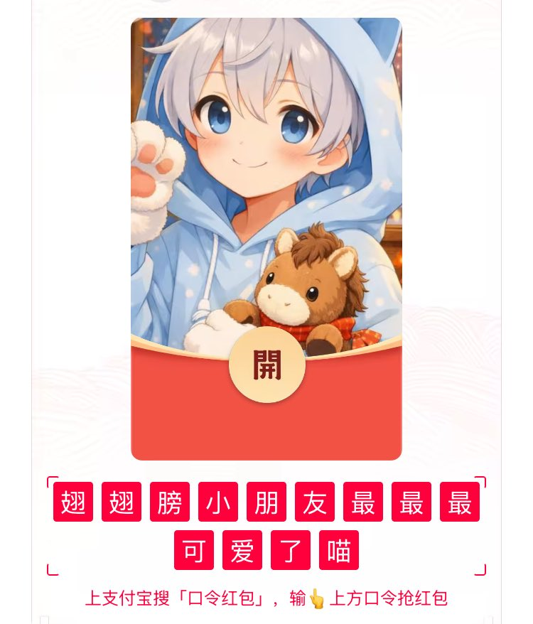

翅翅膀喵
@axzamyzed
大年初一给大家拜年啦！
祝大家身心康健，笑口常开！
愿生活如骏马奔腾一般充满活力，愿事业如旭日东升一般蒸蒸日上，愿心愿如春花绽放一般美满如意。
翅翅膀在这里送上真挚祝福，祝新年快乐，万事顺意！
——
如果你有任何不如意、不顺心的事情，可以随时私信我聊聊，我愿意倾听你的心声。不过还是希望新的一年，每个人都能心情愉快、充满力量！当然，如果你只是想找个人说说话，也欢迎来找我哦～
这是一点小小的心意，不多，但希望能带给你一些年味和喜庆～领了的话…记得点个赞或者留个言，让我知道还有你的陪伴！祝福大家新的一年幸福满满！！！
